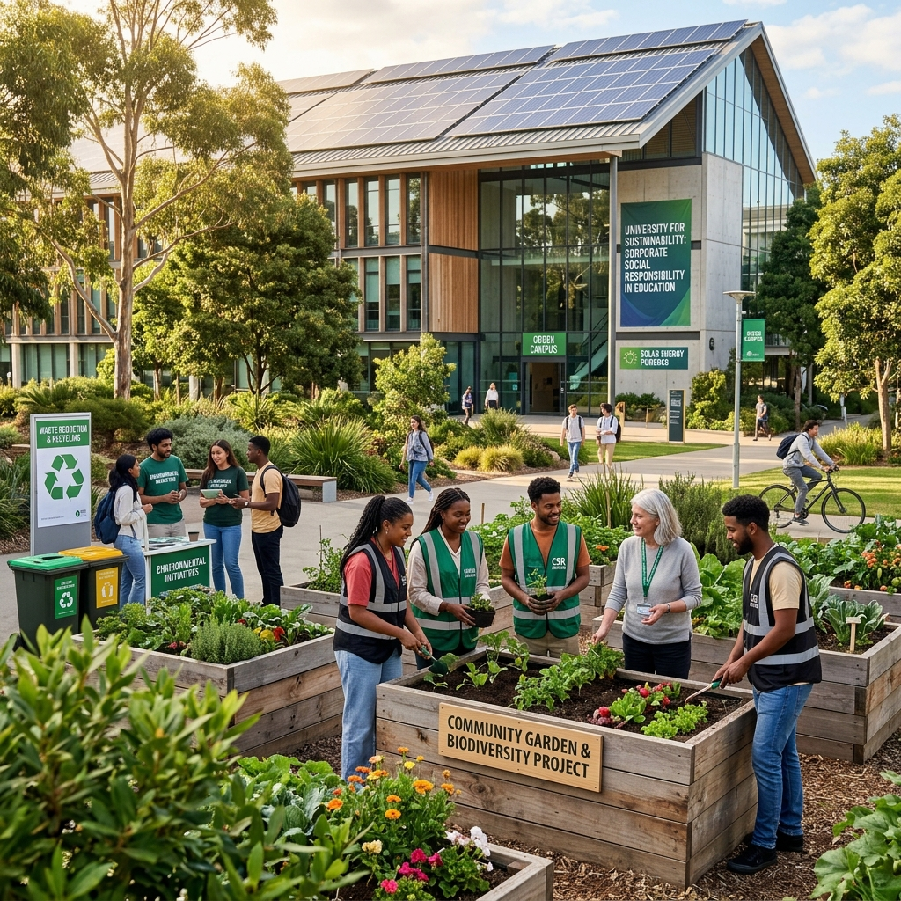

Eco University
Eco University
CSR in Education
Empowering Education through Corporate Social Responsibility
Eco University
Empowering Education through Corporate Social Responsibility

Corporate Social Responsibility (CSR) in higher education refers to the commitment of universities and colleges to operate in an ethical, sustainable, and socially responsible manner. Beyond academic excellence, higher education institutions hold a unique position of influence as they shape the values, skills, and civic awareness of future leaders. By embedding CSR principles into their core operations and academic culture, universities can drive meaningful change both within their campuses and across the wider communities they serve. This commitment also strengthens their role as agents of social innovation, ensuring that education contributes to long-term societal progress.
Successful CSR initiatives in higher education often take the form of community outreach programs that engage students with underserved groups. They also include sustainability projects such as zero-waste campaigns, the use of renewable energy, and partnerships with local businesses and nonprofit organizations. Together, these efforts highlight how universities can integrate social responsibility into both campus life and broader community development. Many institutions also incorporate service-learning into their curricula, encouraging students to apply classroom knowledge to real-world social and environmental challenges, thereby creating a generation of graduates who are not only professionally capable but also socially responsible.
In the future, CSR in education will help solve global problems such as climate change, inequality, and economic growth. Universities that champion CSR actively attract socially conscious students, faculty, and funding partners. At Eco University, we believe that education, paired with purpose, becomes most powerful. Our CSR initiatives demonstrate a steadfast commitment to creating positive change for both students and the communities they serve.